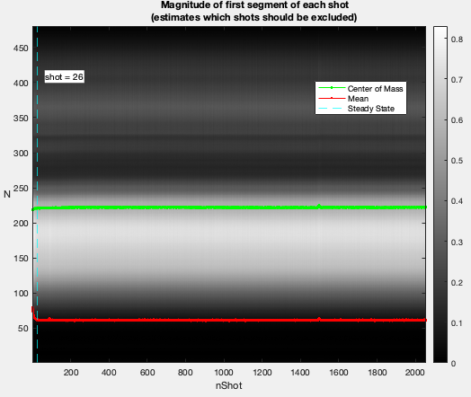
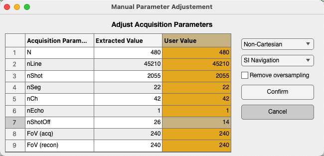
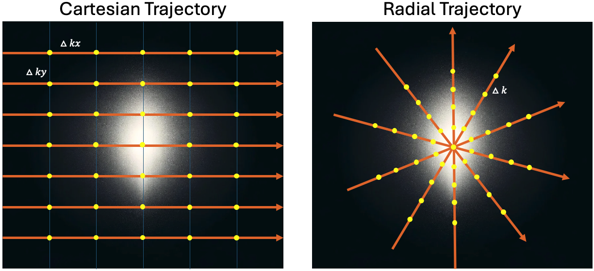

The Mitosius¶
Creating the Mitosius is the last preparation step before the reconstruction. This section covers how to prepare the mitosius.
You have already run the coil sensitivity estimation or had an estimate of coil sensitivity by your own procedure (see the Coil Sensitivity Map Estimation). You need to have access to the raw data of the acquisition (of course :)).
This script is designed to process Siemens raw MRI data/ISMRMRD using various monalisa functions to load raw data, initialize parameters, compute trajectory points and volume elements, normalize the data, and generate the output “mitosius”. The resulting mitosius contains raw data, the computed trajectory and the volume elements for each bin.
Important
Keep in mind that the trajectory must be supported by the toolbox; alternatively, you can define and implement a custom trajectory following our suggestion at the end of the section (see the section Using a Custom Acquisition Trajectory).
Prerequisites¶
Ensure you have the following files and paths correctly set up:
Siemens raw data file. (Or ISMRMRD file)
Precomputed coil sensitivity matrix (C.mat).
Precomputed binning mask (Mask.mat)
Additionally, the required functions (e.g., bmTwix_info, bmTwix, bmTraj, etc.) should be available in your MATLAB environment, as these functions are internal functions in the monalisa toolkit.
Tip
If you use a 3D radial trajectory, you can use bmTwix_info function to help you inspect acquisition parameters by bmTwix_info(‘/path/to/raw_data.dat’). bmTwix_info is only a help function which is not part of the recon procedure. Sometimes, bmTwix_info may fail to read the raw data file. But there is no need to worry-you can still find your way to identify acquisition parameters.
Usage instructions¶
Define the Paths¶
%% Paths - Replace for your own case
f = '/your/path/to/raw_data/rawdata.dat';
CMatPath = '/your/path/to/C/C.mat';
MaskPath = '/your/path/to/Mask/Mask.mat';
mitosiusPath = '/your/path/to/save/mitosius/';
Load the Raw Data¶
autoFlag = false; % Set whether the validation UI is shown
% Create the appropriate reader based on the file extension
reader = createRawDataReader(f, autoFlag);
In our examples, we often use 3D radial trajectory. In that case, the raw data reader will check the first segment of each shot to estimate after how many nLines, steady state is reached. For your own trajectory, you can find your own way.
(The image title is yet to change)
The acquisition parameters will be extracted automatically, if possible.
You can also modify the parameters manually in the “User Value” column (in yellow), for example: adjusting nShotOff according to your needs. If you want to include all the lines for reconstruction, set nShotOff = 0. Then click the “Confirm” button.
Add MRI Acquisition Parameters¶
Save the acquisition parameters into p and add other parameters you may need.
p = reader.acquisitionParams;
p.selfNav_flag = true;
p.traj_type = 'full_radial3_phylotaxis';
% Initialize and fill in the parameters:
% p.raw_N_u: acquisition matrix size (identified from your acquisition protocol)
p.raw_N_u = [480, 480, 480]; % optional, just for records
p.raw_dK_u = [1, 1, 1]./480; % optional, just for records
Read the raw data and compute trajectory points, volume elements¶
% Read raw data
% get raw data without nshotoff and SI
flagSS = true
flagExcludeSI = true
% flagSS: if true, filter out the non steady state shots
% flagExcludeSI: if true, filter out the SI projections
y_tot = reader.readRawData(flagSS, flagExcludeSI);
% compute trajectory points
% get 'full_radial3_phylotaxis' trajectory without nshotoff and SI
t_tot = bmTraj(p);
% alternatively you can compute your own trajectory
% more details in "Using a Custom Acquisition Trajectory"
% compute volume elements (3D full radial trajectory in this case)
ve_tot = bmVolumeElement(t_tot, 'voronoi_full_radial3');
Load the Coil Sensitivity Matrix¶
Resize the coil sensitivity matrix to match the reconstruction matrix size.
Tip
Here we want to clarify the distinction of the concepts between “Reconstruction matrix size” and “Acquisition matrix size”
Acquisition matrix size: This refers to the matrix size specified by the acquisition protocol. It was already set at the acquisition step by the experimenters.
Reconstruction matrix size Matrix_size: This is set by the user based on the desired resolution of reconstructed images, i.e. the size of the reconstructed image.
N_u: The size of reconstruction grid in Fourier space. For example, we can set N_u = Matrix_size.
\(N_u = [N_x, N_y, N_z]\)
n_u: The size of reconstruction in image space. It is possible to set n_u ≤ N_u. However, we recommend setting n_u = N_u for achieving the optimal image quality.
\(n_u = [n_x, n_y, n_z]\)
- dK_u: The step size of the grid in Fourier space, calculated as dK_u = 1/Fov.
\(dK_u = [dK_x, dK_y, dK_z]\)
load(CMatPath);
% n_u: reconstruction matrix size
C = bmImResize(C, [48, 48, 48], [N_u, N_u, N_u]);
Normalize the data¶
Normalize the raw data by the average value of a region of interest (ROI). The goal is to adjust the intensity values of the image so that they are centered around a mean of 1 in the ROI.
Important
Keep in mind that whether or not normalization is applied, the regularization weight in the final reconstruction step should be adjusted accordingly. Our normalization helps standardize the regularization weight.
x_tot = bmMathilda(y_tot, t_tot, ve_tot, C, N_u, n_u, dK_u);
bmImage(x_tot);
temp_im = getimage(gca);
bmImage(temp_im);
temp_roi = roipoly;
Here an estimation of the reconstructed image will be shown and you can select the ROI based on it.
We selected the left eye globe as the ROI in our example below, you can also select yours with a larger area in the brain.
Left Click: Adds a vertex at the clicked position.
Right Click/Double Click: Completes the polygon and closes it automatically.
normalize_val = mean(temp_im(temp_roi(:)));
% normalize it only once
y_tot = y_tot / normalize_val;
Cleaning of the mask¶
For some trajectories, such as the 3D radial trajectory, it is necessary to clean the SI projection and remove the first unsteady shots from the acquired readouts. Therefore, we also need to clean the binning mask accordingly to ensure that the size of Mask matches the size of y_tot.
load(MaskPath);
Mask = reshape(Mask, [20, 22, 2055]);
% before cleaning, the size of Mask: [nBin, nSeg, nShot]
Mask(:, 1, :) = [];
Mask(:, :, 1:p.nShot_off) = [];
% after cleaning, the size of Mask: [nBin, nSeg-1, nShot-p.nShot_off]
Mask = bmPointReshape(Mask);
% after the reshape, the size of Mask: [nBin, nLines]
% where nLines=(nSeg-1)*(nShot-p.nShot_off)
Compute Final Data Structures for Reconstruction¶
Run the bmMitosis function and compute the final volume elements.
[y, t] = bmMitosis(y_tot, t_tot, Mask);
y = bmPermuteToCol(y);
ve = bmVolumeElement(t, 'voronoi_full_radial3');
Save the Results¶
Save the computed data structures to disk. These will be used for the final reconstruction.
bmMitosius_create(mitosiusPath, y, t, ve);
Notes¶
Ensure all paths are correctly set according to your system.
If you encounter issues with function calls (e.g., bmTwix, bmTraj), verify that the necessary scripts or external toolboxes are added to the MATLAB path.
The raw data normalization step ensures that the average value in the selected ROI ranges around the mean of 1 in the reconstructed images. This allows the standardization of the regularization weights.
Using a Custom Acquisition Trajectory¶
You can use any trajectory with our reconstruction as long as you can provide the volume elements (inverse density compensation) for your trajectory. These volume elements can be estimated by one of our volume-element functions if your trajectory is supported by Monalisa. Else you have to implement your own volume-element function.
You can create your own custom trajectory as long as you follows the following rule:
The trajectory points in k-space must be given in physical units according to your FoV.
Examples:
If your acquisiton trajectory corresponds to a FoV of
[200, 300]in mm (milimeter), the step size in kx-direction of k-space must then be 1/200 (in 1/mm), and the step size in ky-direction of k-space must be 1/300 (in 1/mm).
If your acquisiton trajectory is a radial trajectory for a FoV of
[360, 360]in mm, the space between two consecutive points on a radial trajectory line must be 1/360 (in 1/mm).

If you already computed your trajectory and that it is scalled in the unit-cube (between -0.5 and +0.5 in each direction), you can make the following rescaling to adapt your trejectory for Monalisa.
- For that you need to identify:
the true acquisition matrix size \([aN_x, aN_y, aN_z]\) i.e. the one that corresponds to your raw data, not the one that appears on the scanner interface.
the true acquisition field of view \([aL_x, aL_y, aL_z]\) i.e. the one without croping, as it can be done on images reconstructed on the scanner if you chose to acquire with some “over-sampling”.
Let then be \([k_x, k_y, k_z]\) the coordinate of a trajectory point. Then rescale it as
\([k_x, k_y, k_z] \rightarrow [k_x \cdot aN_x/aL_x, \quad k_y \cdot aN_y/aL_y, \quad k_z \cdot aN_z/aL_z]\)
In another scenario, you may already have your trajectory with the convention that \(k_x\) is scalled between \(-aN_x/2\) and \(aN_x/2 - 1\) and \(k_y, k_z\) are scalled acoordingly. Then you can simply rescal your trajectory as
\([k_x, k_y, k_z] \rightarrow [k_x/aL_x, \quad k_y/aL_y, \quad k_z/aL_z]\)
The trajectory is not a reconstruction quantity in the sense that it cannot be chosen flexibly for the reconstruction. It is an acquisition quantity that is set at acquisition and cannot be changed anymore. We have thus to guess how the scanner defined the trajectory. There is no algorithm for that because it depends on arbitrary conventions used on each MRI scanner.
We don’t work with arbitray units in Monalisa. For example, we do not admit that the edge length of voxels is 1, which corresponds to a scaling ot the trajectory in the unit-cube. This strategy of working with physical (non-arbitrary) units allows for example to work with different voxel-size for the same data without having scaling problems in the reconstructed images.